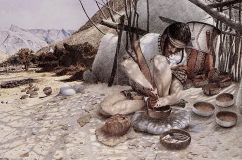
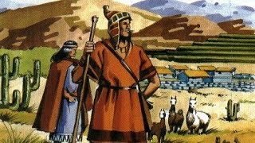

La historia de Cachi es una fascinante mezcla de herencia indígena y la influencia colonial española. Originalmente habitada por varios pueblos indígenas, como los diaguitas, omaguacas y calchaquíes, la región albergaba una rica cultura y economía basada en la agricultura y la ganadería. Sin embargo, en el siglo XVI, los conquistadores españoles llegaron a la región y la sometieron bajo la influencia colonial. Cachi se convirtió en parte del Virreinato de Perú y luego del Virreinato del Río de la Plata.
Durante la época colonial, Cachi prosperó como un importante centro agrícola y ganadero. La arquitectura colonial, como las iglesias de San José, se convirtió en un testimonio de esta época, con su estructura blanca y su campanario
A lo largo de los siglos, Cachi experimentó altibajos económicos y momentos de conflictos. Durante el período de la independencia argentina del dominio español, la región fue testigo de conflictos y luchas por la independencia.Después de la independencia, Cachi continuó desarrollándose como un pueblo agrícola y ganadero.
Hoy en día Cachi es conocido por su rica historia y su belleza natural. Los Valles Calchaquíes que rodean la ciudad son famosos por su paisaje impresionante y su producción de vinos. La Iglesia de San José y la arquitectura colonial se mantienen como un recordatorio de su legado colonial, mientras que la influencia indigena se puede rastrear en las tradiciones y la cultura de la región. Cachi se ha convertido en un destino turístico popular que atrae a visitantes por su historia, cultura y el impresionante entorno natural que lo rodea
En la zona histórica habitaron varios pueblos originarios. Entre los más destacados se encuentran los Calchaquíes, una confederación de diferentes grupos indígenas como los Diaguitas, los Tonocotés y los Omaguacas. Estos pueblos indígenas compartían similitudes culturales pero mantenían identidades distintivas.
Los Diaguitas eran conocidos por su avanzada agricultura, cerámica y textiles. Los Omaguacas eran expertos agricultores que vivían en los valles y quebradas, mientras que los Tonocotés eran cazadores y recolectoresque se adaptaron a las zonas más áridas.
La presencia de estos pueblos originarios en la región se remota a tiempos precolombinos y su legado cultural y arqueológico ha dejado una huella significativa en la historia de Cachi y los Valles Calchaquíes.